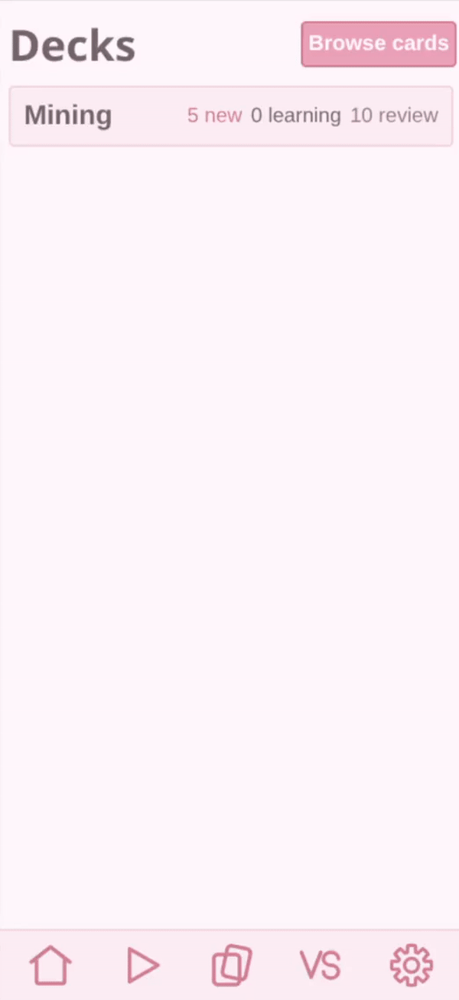
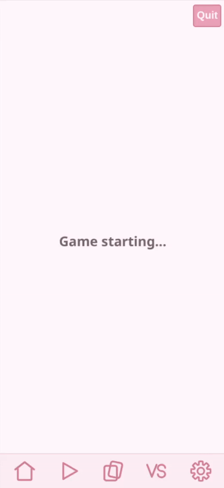

Learn Japanese from the videos you'd like to watch.
Paste a YouTube link and HearnTube turns its subtitles into an interactive transcript. Tap any word to see its reading and dictionary entry, then save the ones you want to study later, along with the clip and audio they came from. Later you can review them in a spaced-repetition deck powered by FSRS.
Review them until they stick. Then prove it: in the Versus arena, players pool words from their own decks and race to fill in the blanks.
How it works
- Paste a link. Its subtitles become a transcript that scrolls in time with the video.
- Tap a word. See its reading and every dictionary sense; words are segmented for you.
- Keep the good ones. A saved word becomes a card, stored with the line, clip, and audio it appeared in.
- Review with FSRS. Each card resurfaces right as you're about to forget it.


Versus
Players pool words from their own decks and race to fill in the blanks.
The words you mined are the words you're tested on and the ones of your adversary.

Dictionary data
Dictionary content is derived from JMdict, the property of the EDRDG, used under CC BY-SA 4.0. The generated dictionary database is a derivative of JMdict and is distributed under CC BY-SA 4.0. Source data from scriptin/jmdict-simplified.